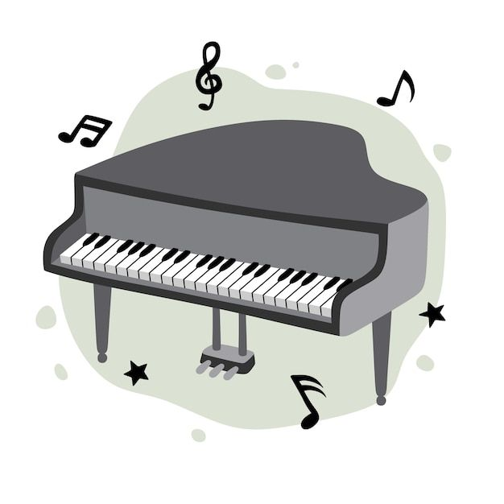
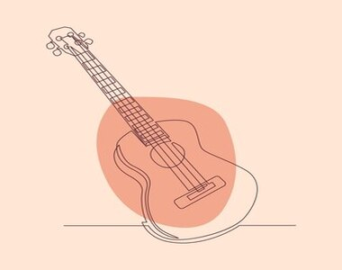
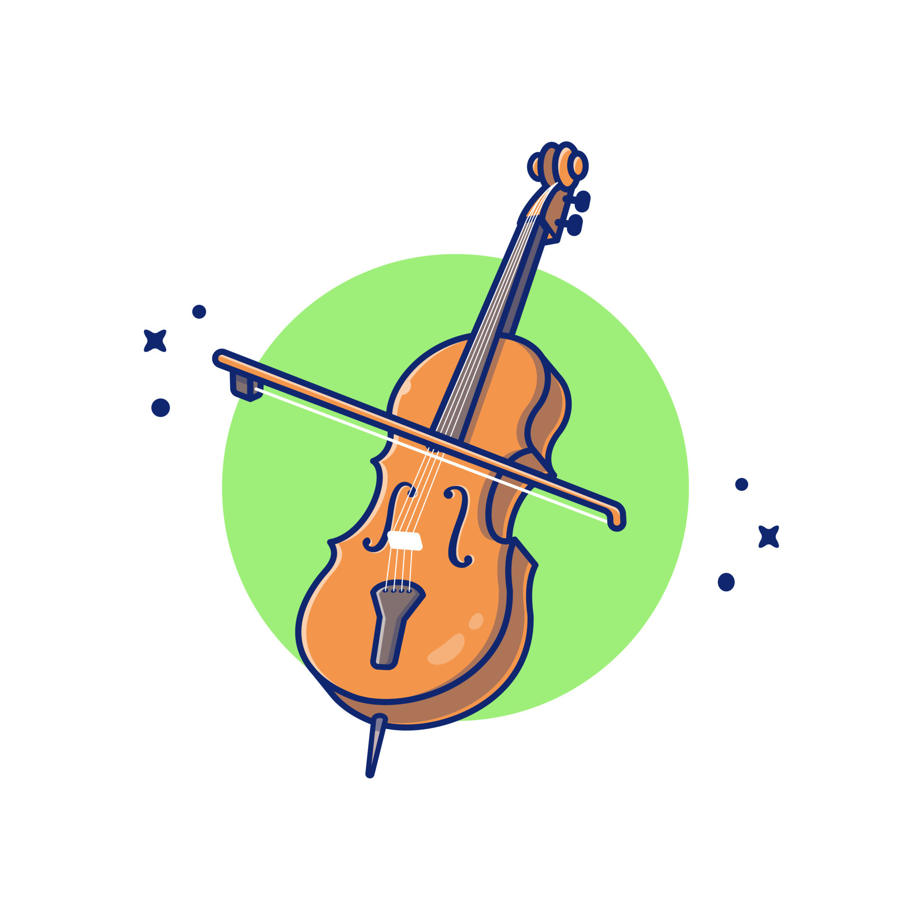
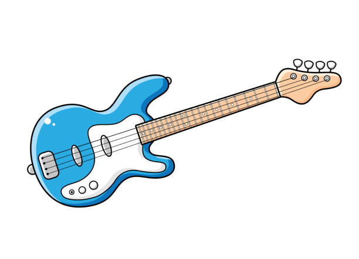
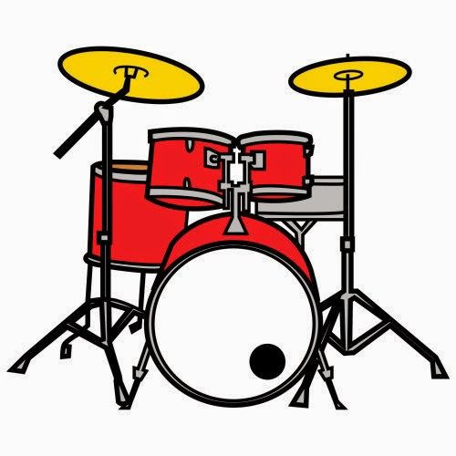
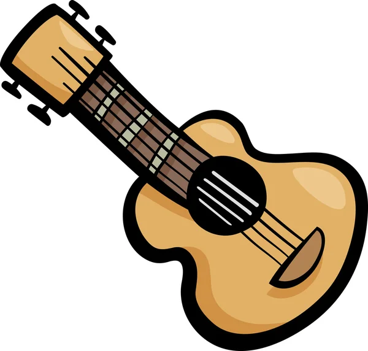

A continuación se veran algunos instrumentos músicales.
Teniendo en cuenta cada descripción y algún ejemplo en forma auditiva representando cada unas de las partes para la recreación en la música.

Piano
Piano
Es un instrumento musical de cuerda percutida que se toca mediante un teclado.
Su estructura principal consta de un armazón de madera o metal que sostiene las cuerdas tensadas a lo largo de su longitud.

G.Acustica
G.Acustica
La guitarra es un instrumento musical
de la familia de los cordófonos, es decir los instrumentos que producen su sonido al hacer vibrar las cuerdas.

Violin
Violin
Instrumento musical de cuerda, el más pequeño y agudo entre los de su clase, que se compone de una caja de resonancia en forma de 8,
un mástil sin trastes y cuatro cuerdas que se hacen sonar con un arco.

G.Electrica
G.Electrica
Instrumento musical, derivado de la guitarra, en que la vibración de las cuerdas se recoge
y amplifica mediante un equipo electrónico.

Bateria
Bateria
La batería es un conjunto de instrumentos musicales de percusión usado por muchas agrupaciones musicales.
En ocasiones suele añadirseles un cencerro y collares de canicas en los platos y hit hat.

Ukelele
Ukelele
Instrumento musical de cuerda, popularizado desde el archipiélago estadounidense de Hawái,
parecido a la guitarra, pero de menor tamaño y con un contraste de sonido.